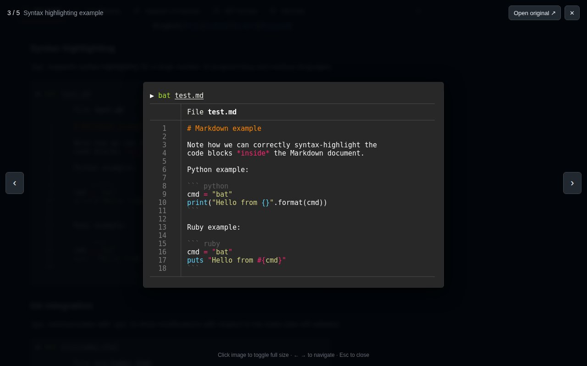
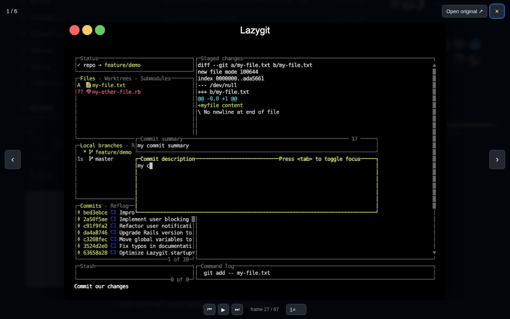
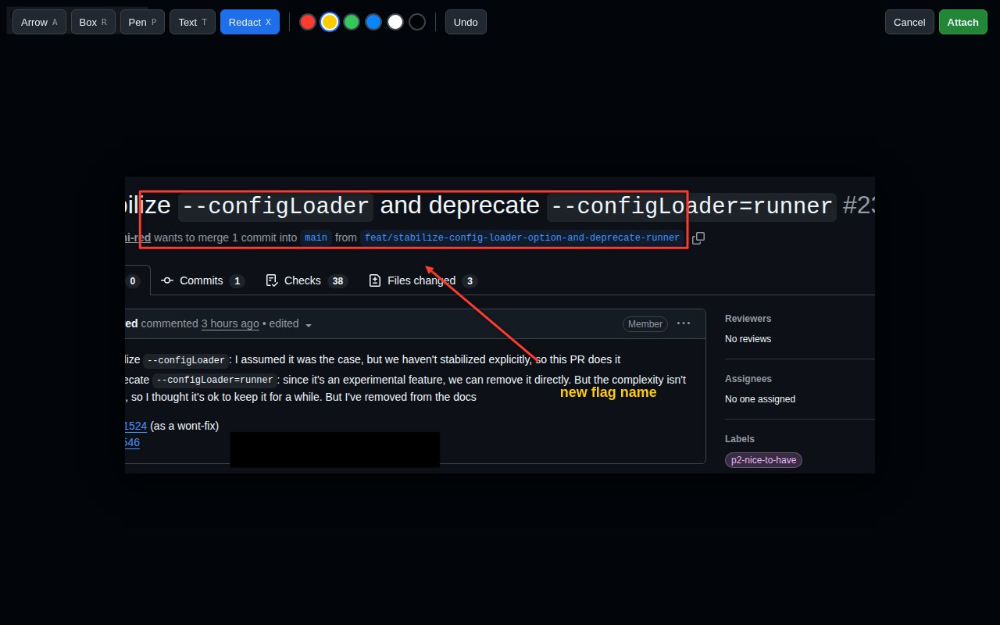
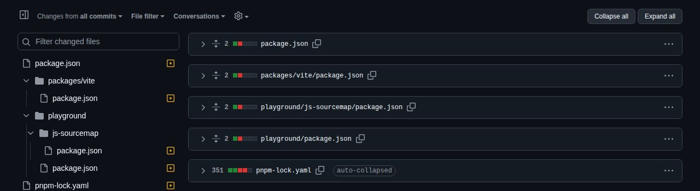
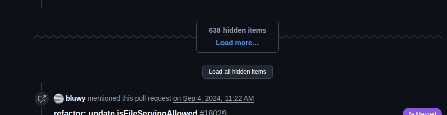
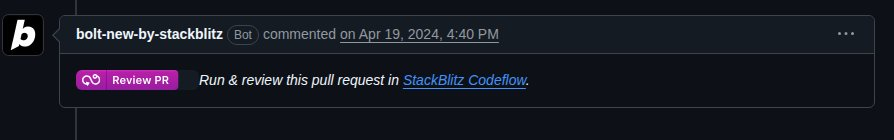
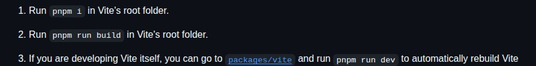
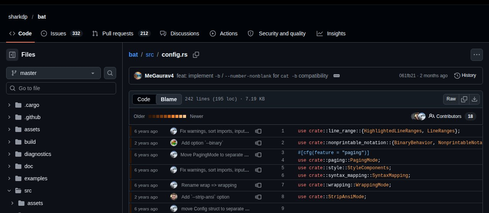
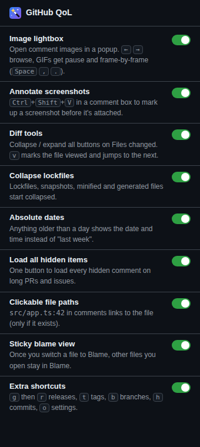

GitHub QoL
A small Chrome extension that smooths out the annoying bits of GitHub.
Image lightbox
Images in PRs, issues and READMEs open in a popup instead of a new tab. Use ← → to browse every image on the page and Esc to close.

GIF player
Pause a GIF, step through it frame by frame with , ., or slow it down.

Annotate screenshots
Press Ctrl+Shift+V in a comment box to add arrows, boxes, text or redactions to a screenshot before it's attached. Plain Ctrl+V works as usual.

Diff tools
Collapse or expand every file at once. v marks the current file as viewed and jumps to the next. Lockfiles and generated files start collapsed.

Load all hidden items
Long PRs and issues hide hundreds of comments behind "Load more". One click loads them all.

Absolute dates
Anything older than a day shows the actual date and time, not "last week".

Clickable file paths
File paths in comments, like src/app.ts:42, link to the file and line. They're only linked if the file actually exists.

Sticky blame view
Switch a file to Blame and every file you open after that stays in Blame until you switch back.

Extra shortcuts, and a switch for everything
g then r releases, t tags, b branches, h commits, o settings. Every feature can be turned off from the toolbar popup.

Install
- Download the zip and unzip it.
- Open
chrome://extensionsand turn on Developer mode. - Click Load unpacked and pick the unzipped folder.